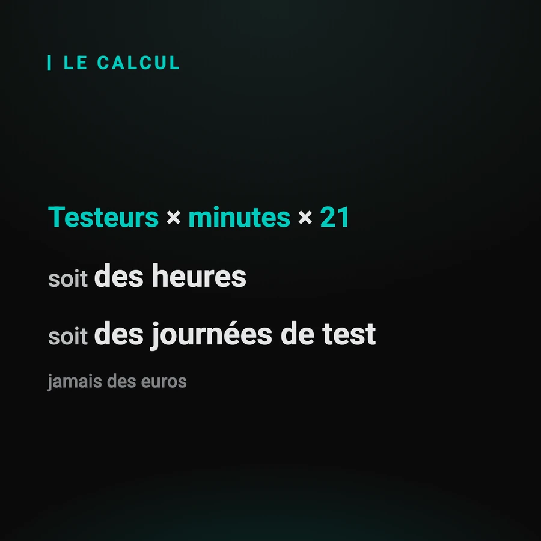

Combien coûte l'étape manuelle d'authentification ?
Personne ne peut répondre à votre place : le chiffre dépend de vos effectifs et de vos campagnes. Ce guide donne la formule, les trois coûts que l'on oublie systématiquement, et ce que ce calcul ne dit pas. Vous repartez avec votre chiffre, pas avec le nôtre.
Par Sylvain Perez, créateur de Q-Bot. Mis à jour le
Comment se calcule le coût, en heures ?
Trois nombres suffisent : combien de personnes sont mobilisées par cette étape, combien de minutes chacune y perd par jour, et combien de jours ouvrés compte le mois. Le produit des trois donne des heures, et les heures se convertissent en journées de test.

La formule, telle quelle :
- testeurs mobilisés × minutes perdues par jour × 21 jours ouvrés
- le résultat est en minutes : divisé par 60, il donne des heures
- divisé par 7, il donne des journées de test, l'unité dans laquelle on planifie
Le calcul est posé sur la page de démonstration, avec deux curseurs et le détail affiché sous le résultat. Un grand nombre sans son calcul est un argument publicitaire ; avec son calcul, c'est une mesure que vous pouvez contredire.
Quels sont les trois coûts que l'on oublie ?
Le temps de reprise après interruption, qui ne se voit dans aucun relevé. La disponibilité de nuit, qui ne se paie pas au tarif de jour. Et les campagnes abandonnées, dont le coût n'est pas le temps passé mais l'information qu'on n'a pas eue.
Les trois, dans l'ordre où ils grossissent :
- la reprise après interruption : valider un code prend dix secondes, retrouver le fil en prend davantage
- la disponibilité de nuit : une astreinte ne se compare pas à une heure de journée
- les campagnes abandonnées : le coût n'est pas le temps passé, c'est le défaut qu'on n'a pas vu
Le troisième est le plus lourd et le plus difficile à chiffrer. Le symptôme, lui, est visible dès le rapport du matin : « pourquoi vos campagnes de nuit s'arrêtent au login ».
Comment le mesurer chez vous cette semaine ?
Sans outil et sans réunion : relevez pendant cinq jours le nombre de validations manuelles faites par votre équipe, et le nombre de scénarios en échec à la même étape. Deux colonnes dans un tableur suffisent, et le résultat est difficile à contester.
Le protocole, tel qu'il tient sur un coin de table :
- une ligne par jour, deux colonnes : validations faites à la main et scénarios en échec à cette étape
- cinq jours, pas un : un lundi ne ressemble pas à un jeudi de fin d'itération
- notez à part les campagnes relancées le lendemain matin
Ce relevé sert deux fois : il donne le chiffre, et il montre à une direction où part le temps.
Qu'est-ce que ce calcul ne dit pas ?
Il ne dit pas ce qu'une solution coûte, il dit ce que le problème coûte. Convertir des heures en euros demanderait votre taux horaire, que nous n'avons pas et que nous n'inventerons pas. Le rapprochement des deux, c'est votre calcul, avec vos chiffres.
Deux précisions qui rendent ce calcul défendable :
- il rend un résultat en heures et en journées, jamais en euros : le taux horaire est le vôtre
- il ne suppose aucun gain de notre côté : c'est votre coût actuel, pas une économie promise
Ce que change concrètement l'automatisation de cette étape est décrit dans la page de référence, et le tarif se donne en démonstration, pas dans un guide.